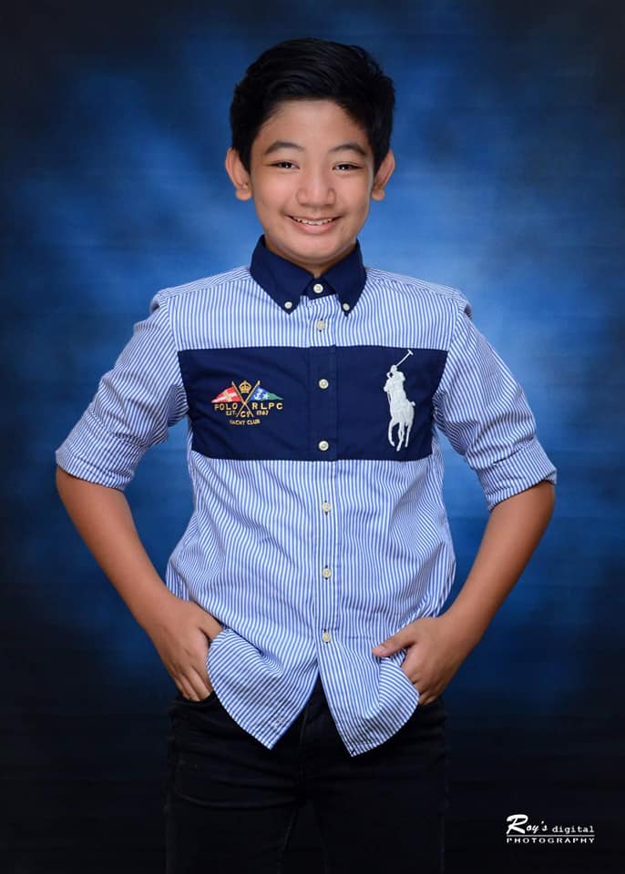
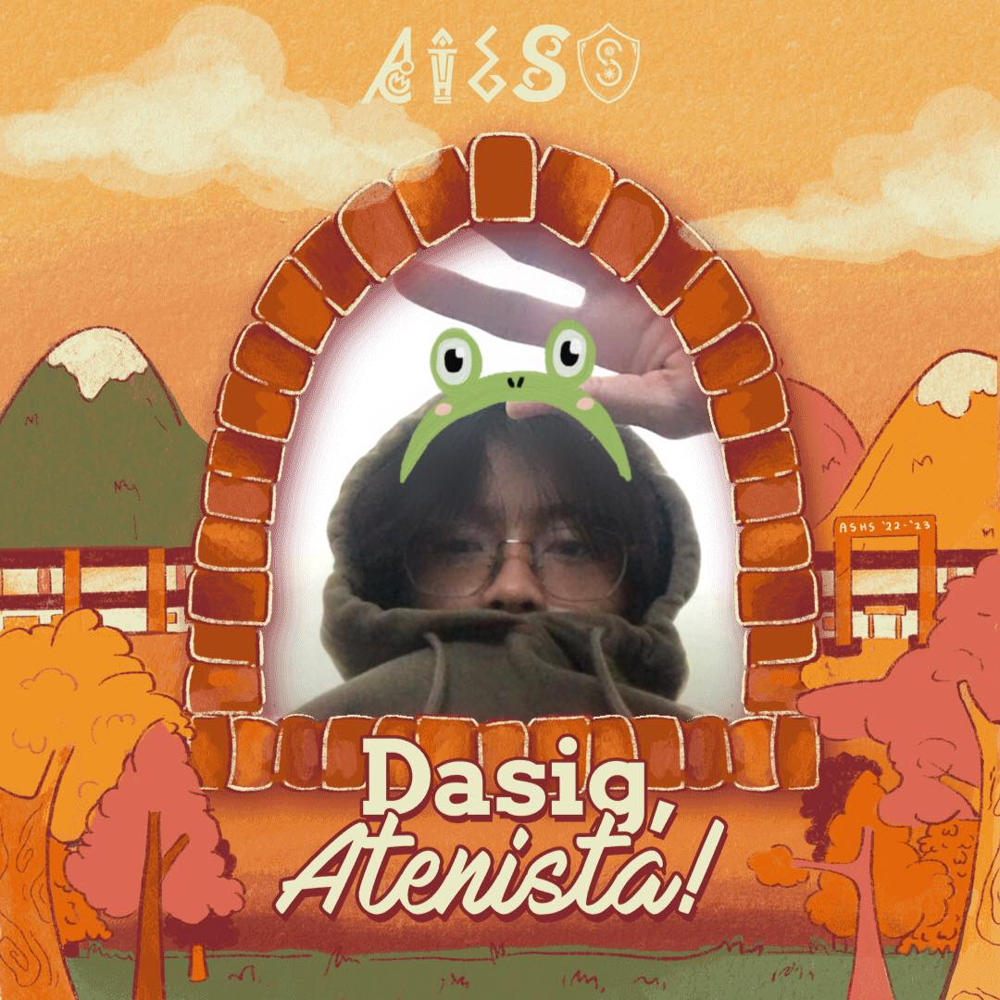
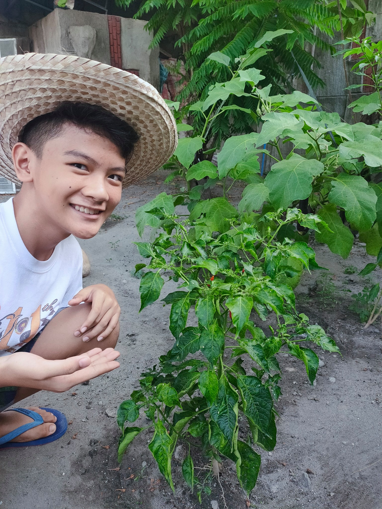
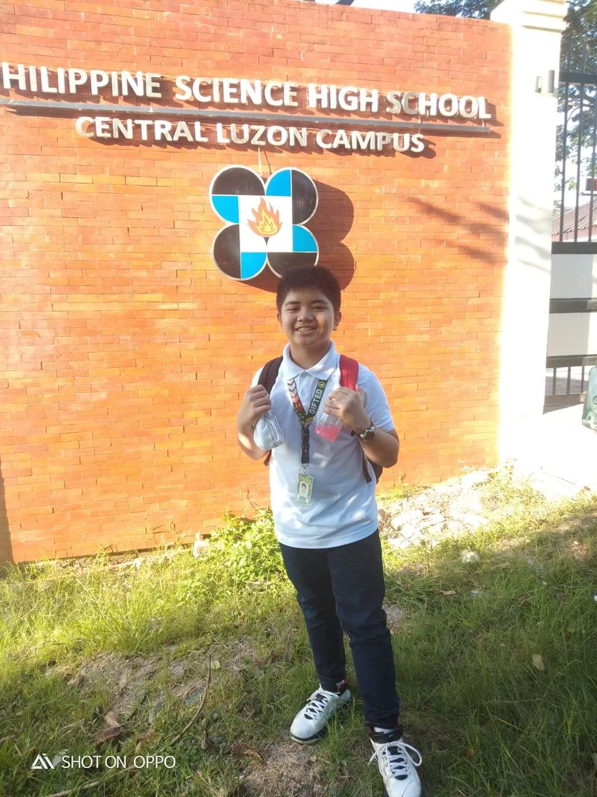

Enzo Macalino

Enzo is a friend that I've been with since the 4th grade, To be honest we didn't have a great start and sometimes I even had fights with him.
Ironically, I became best friends with the guy after being with him in a summer school. He is a very vibrant and cheerful person (Though sometimes he can get a bit too hotheaded)
he is very fun to be with as he is sporty and full of energy, a fun teammate to play with in high-impact sports games like basketball.
Ramon Viray

Ram Viray is a good friend of mine that I had a rough start with much like Enzo, we didn't get along and we hated each other for the first few months of meeting. But later on
we became very good friends and he acted like an older more mature brother of mine, he would be very fun to play with as he had this humor that was almost the same as to what I found hilarious.
A few things I can tell you about him is that he has a lot of friends or to phrase it better a lot of people really like him for his cheerful and goofy personality.
Daniel Velarde

Daniel Velarde is a friend I've been with since kindergarten and the time we met each other was pretty funny he was being choked by a kid that was trying to steal his figurine and our teacher helped him out. He is a very weird person with a funny sense of humor people either
love him or hate him. Daniel is very extroverted and finds it fun to go outside and experience some adventure,
he also likes to make playlists that are very fun to listen to.
JM Tolentino

John Michael or "JM" is a person that likes music a lot, afterall he's been playing guitar for about 4 years now. JM is a person that sets a goal and aims for it he is a "grinder" type of person
he also has a pretty good temper as he doesn't get mad easily, I met JM a lot later than Enzo and Daniel, we were in the same school but I hadn't really talked to him until the 5th grade and even then we weren't exactly the best of friends.
But in the same summer school that I met Enzo I also met JM there, and that's how we eventually became really good friends